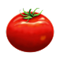

A técnica Pomodoro é um método de gestão de tempo criado por Francesco Cirillo, que ajuda a manter o foco e evitar a procastinção. A idéia é dividir o trabalho em blocos curtos de tempo chamados pomodoro, seguidos de pequenas pausas para descanso. 